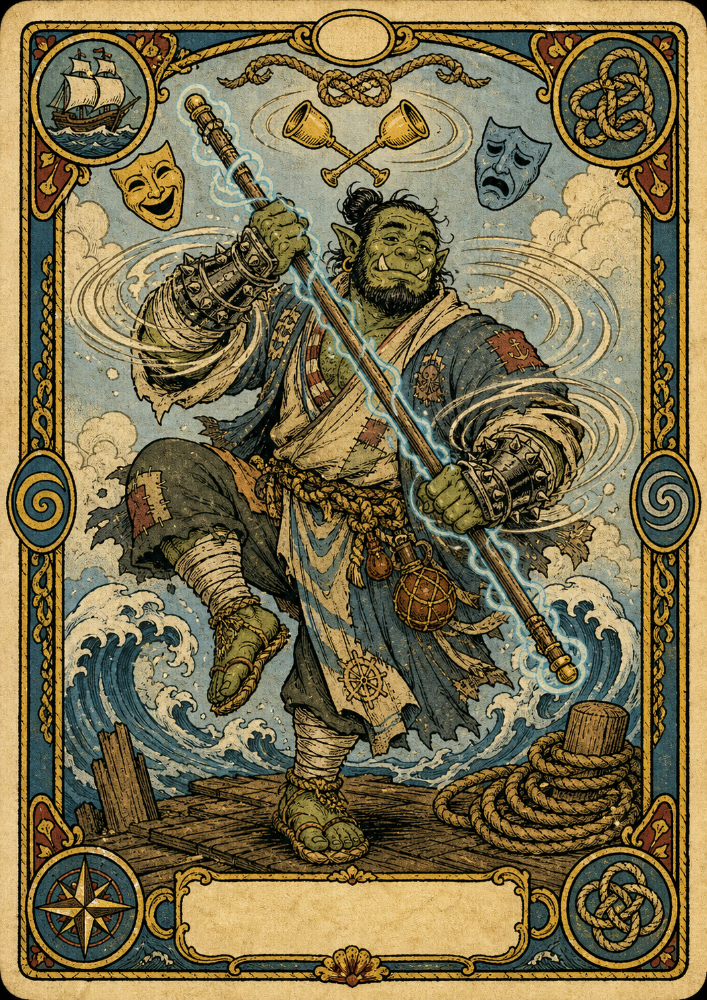

Player Character
Grum 'Grog Guzzler' Ironjaw (JP)
Half-Orc / Monk (Drunken Master) / Level 5
AC14
Init+2
Prof+3
Speed40 ft
Edit OverviewEdit
ClassMonk
SubclassDrunken Master
RaceHalf-Orc
BackgroundSailor
Experience8000
Gold0
Hero Points0
Guild RankE
Guild Points51
Edit AbilitiesEdit
Strength12+1
Dexterity14+2
Constitution12+1
Intelligence10+0
Wisdom14+2
Charisma12+1
Edit CombatEdit
Armor Class14
Initiative+2
Proficiency+3
Speed40 ft
Simple Melee+4
Simple Ranged+5
Martial Melee+1
Martial Ranged+2
Spell Attack+5
Spell Save DC13
Weapon Attacks
Edit Combat StatsEdit
Edit HealthEdit
Edit AbilitiesEdit
Saving Throws
Strength+4
Dexterity+5
Constitution+1
Intelligence+0
Wisdom+2
Charisma+1
Skills
Acrobatics DEX+5
Animal Handling WIS+2
Arcana INT+0
Athletics STR+4
Deception CHA+1
History INT+0
Insight WIS+2
Intimidation CHA+4
Investigation INT+0
Medicine WIS+2
Nature INT+0
Perception WIS+2
Performance CHA+4
Persuasion CHA+1
Religion INT+0
Sleight of Hand DEX+2
Stealth DEX+5
Survival WIS+2
Edit EquipmentEdit
ClassMonk (Drunken Master)
BackgroundSailor
FeatsActor
RaceHalf-Orc
No extra class features recorded.